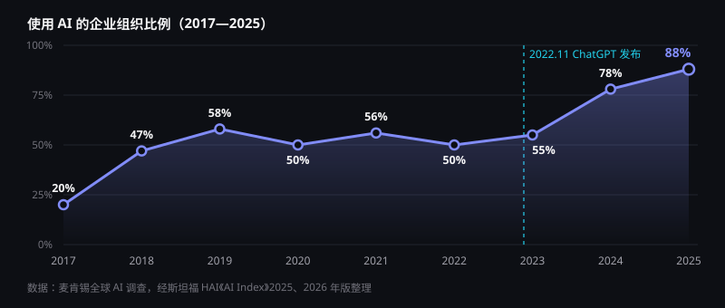
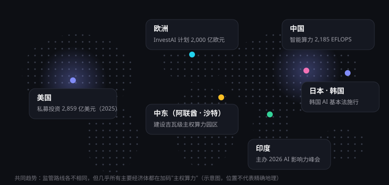

数据洞察：AI 进入规模化阶段
资本、企业与个人用户正以前所未有的速度拥抱人工智能。本页先呈现 2026 年以来的最新数据，再以斯坦福大学《2026 AI Index》回顾 2025 全年，帮助你看清 AI 的真实体量。
2026 年最新数据
2026 年上半年，AI 的各项指标继续刷新纪录：半年的 AI 风险投资就超过了 2025 年全年（同一统计口径），中国生成式 AI 用户突破 7 亿，全球人形机器人出货量同比增长近 3 倍。
商业化：收入进入数百亿美元量级
2026 年，头部模型公司的年化收入（按当期收入折算的全年值）已达到数百亿美元量级，并仍在快速增长。
各公司对云平台渠道等收入的计算方式不同，公开数字只能反映各自的量级，不宜相互比较。例如，CNBC 报道 Anthropic 在 2026 年 7 月底约为 650 亿美元；《金融时报》报道 OpenAI 在 2026 年 9 月约为 500 亿美元。
2025 年度回顾：核心指标
以下数据来自斯坦福《2026 AI Index》（统计 2025 全年，投资为"企业 AI 投资"口径）。四个数字概括 2025 年的 AI：钱投得更多、用得更广、普及更快、产业更实。
企业采用：从五成平台期到近九成
企业对 AI 的态度已从"要不要用"变成"怎么用好"。从下图可以清楚看到：2018—2022 年，企业采用率长期在 50%—60% 之间徘徊，2023 年为 55%；ChatGPT 发布后，生成式 AI 让门槛骤降，采用率两年内跃升到 88%。

为什么 2023 年后突然加速？
早期的 AI 应用（如推荐、风控、质检）需要专门的数据团队和定制模型，只有大企业玩得起。生成式 AI 把能力封装成"用自然语言就能调用"的通用工具，一名普通员工打开对话框就能用上。
与此同时，模型调用价格大幅下降（见下文"成本"部分），让企业从小规模试用到全员铺开的成本门槛迅速降低。
采用率之外的三个细节
- 欧洲领跑：2025 年欧洲受访组织的 AI 采用率达到 91%，为各地区最高。
- 生成式 AI 成为主力：70% 的组织至少在一项业务职能中使用生成式 AI。
- 智能体仍处早期：几乎所有业务职能中，AI 智能体的部署比例都还停留在个位数。
投资：一年翻了一倍多
2025 年全球企业 AI 投资达 5,817 亿美元，较 2024 年的 2,523 亿美元增长约 131%。资本正以前所未有的速度涌向算力、模型与应用。
成本：同等能力的价格下降约 280 倍
AI 普及的另一个推手是价格。斯坦福《2025 AI Index》统计，达到 GPT-3.5 水平的模型，调用价格从 2022 年 11 月的每百万 Token 约 20 美元，降至 2024 年 10 月的约 0.07 美元。
这意味着什么？
- 让模型读完一本约 30 万字的书，成本从数美元降到几美分
- 中小企业和个人开发者也能负担 AI 应用的开发与运营
- "让智能体反复思考、多次尝试"在经济上变得可行
普及速度：比 PC 和互联网更快
生成式 AI 在大众市场推出后的三年内，人口普及率就达到了 53%，速度超过了个人电脑与互联网。普及程度与人均 GDP 高度相关，各国差异明显。
在研发端，产业界已成为绝对主力：2025 年超过 90% 的重要前沿模型由企业而非高校发布——训练前沿模型所需的算力与资金，已远超大多数高校实验室的承受范围。
模型能力也在快速提升：在解决真实 GitHub 问题的 SWE-bench Verified 基准上，顶尖模型的解决率一年内从约 60% 提升到接近 100%；在博士级科学问答 GPQA 上，顶尖模型得分约 93%，已超过人类专家约 81% 的基线；在多模态推理和竞赛数学上，前沿模型也已达到或超过人类水平。
中美对比：性能趋同，各有所长
AI Index 指出，自 2025 年初以来中美顶尖模型的领先位置多次易手，性能差距已基本抹平。
| 维度 | 美国 | 中国 |
|---|---|---|
| 顶尖模型性能 | 差距基本抹平，领先位置多次交替 | |
| 顶级模型数量 | 更多 | 快速增长 |
| 论文与专利 | 高影响力专利更多 | 论文发表量、引用量与专利总量领先 |
| 私募投资（2025） | 2,859 亿美元 | 124 亿美元 |
| 人才流动 | 2017 年以来流入的 AI 研究者大幅减少 | — |
全球 AI 版图：不止中美
中美之外，欧洲、中东、印度、日韩都在制定自己的 AI 战略。各方监管思路差异很大，但有一个共同点：几乎所有主要经济体都在投资建设自己的"主权算力"。

| 地区 | 战略重点 | 代表性举措（2025—2026） |
|---|---|---|
| 美国 | 前沿模型与资本 | 2025 年 AI 私募投资 2,859 亿美元，发布重要模型 50 个（中国 30 个）；科技巨头 2026 年资本开支指引合计超 7,000 亿美元 |
| 中国 | 开源模型与应用普及 | 生成式 AI 用户超 7 亿；智能算力 2,185 EFLOPS；"人工智能+"行动全面推进 |
| 欧盟 | 规则先行 + 补齐算力 | 《人工智能法》分阶段实施；InvestAI 计划动员 2,000 亿欧元，其中 200 亿欧元用于 AI 超级工厂，2026 年 7 月启动最多 7 个站点的招标 |
| 英国 | 安全测评 | AI 安全研究所（2025 年更名为 AI Security Institute）是国际前沿模型测评的重要力量 |
| 阿联酋 | 主权算力枢纽 | "星际之门·阿联酋"规划 1 吉瓦算力，首期 200 兆瓦计划 2026 年投用；2026 年 6 月组建国家人工智能与数据管理局 |
| 沙特 | 国家 AI 公司 | 主权基金支持的 HUMAIN 于 2025 年成立，规划建设大规模 AI 数据中心 |
| 印度 | 普惠与人才 | 2026 年 2 月主办 AI 影响力峰会（首次由南方国家主办，100 多个国家参会），通过 IndiaAI 计划扩充公共算力 |
| 日本 | 促进型立法 | 2025 年 5 月通过《人工智能推进法》，以促进为主、不设罚则，并大规模投入 AI 与半导体 |
| 韩国 | 综合立法 | 《人工智能基本法》于 2026 年 1 月 22 日施行，对高影响 AI 与生成式 AI 提出透明度和风险管理要求 |
海湾国家的投资金额在不同来源中差异较大，此处仅作定性描述。来源见页末。
中国产业数据
来源：工业和信息化部；CNNIC《生成式人工智能应用发展报告（2026）》
数据来源
- Stanford HAI：The 2026 AI Index Report
- 2026 AI Index：Economy 章节
- Stanford HAI：The 2025 AI Index Report
- 新京报：工信部 2026 世界人工智能大会新闻发布会
- EY：Global AI investment hits record $430 billion in H1 2026
- Crunchbase News：2026 年创业融资数据
- 中国新闻网：CNNIC《生成式人工智能应用发展报告（2026）》
- Counterpoint：2026 年上半年全球人形机器人出货量
- CNBC：Anthropic 年化收入达 650 亿美元
- Open Future：欧盟 InvestAI 与 AI 超级工厂
- Wikipedia：India AI Impact Summit 2026
- IT之家：韩国《人工智能基本法》
- Atlantic Council：2026 年 AI 地缘格局